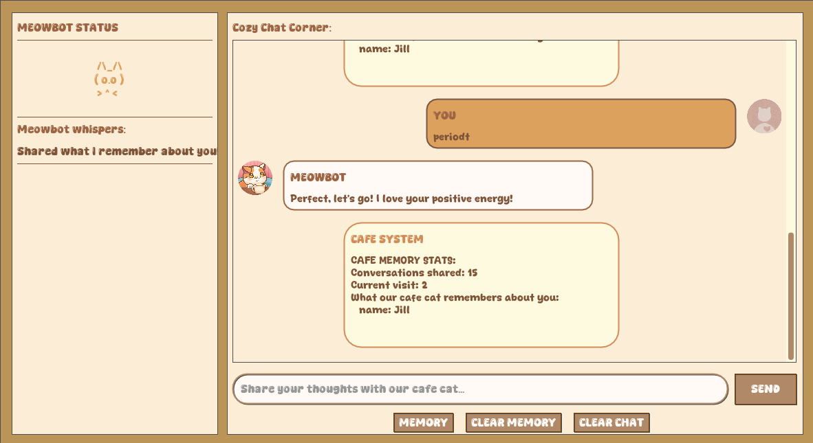

Introduction
MeowBot is an interactive chatbot that can understand GenZ words.
Features
- Purr-sonalized Responses: Context-aware replies with memory of user details
- Gen Z Slang Ready: Understands modern internet language ("slay", "no cap", "sus")
- Typo Tolerant: Uses fuzzy matching to understand misspelled words
- Emotion Detection: Analyzes sentiment in messages to respond appropriately
- Dual Interfaces: Choose between command-line or graphical interface
- Customizable: Easily add new response patterns or change the theme
Logic behind it
- Typo Handling: Uses Levenshtein distance to correct common misspellings
- Intent Matching: Compares input against patterns with fuzzy matching
- Sentiment Analysis: Detects emotional tone using Gen Z slang dictionary
- Context Integration: References previous conversations for continuity
Sample Screenshots

Project Structure
text_processor.py
- Levenshtein Distance: Measures text similarity for fuzzy matching
- Tokenization & Stemming: Breaks down sentences for analysis
- Pattern Matching: Finds closest matches to known phrases
sentiment_analyzer.py
- Gen Z Slang Dictionary: Recognizes modern internet language
- Emoji Analysis: Interprets emoji sentiment values
- Intensity Modifiers: Detects words like "very" or "kinda"
data_manager.py
- Conversation Memory: Stores chat history and user context
- Intent Storage: Manages response patterns in JSON
- Session Tracking: Maintains conversation counts
chatbot.py
- Response Generation: Combines intent matching with sentiment analysis
- Context Awareness: References remembered user details
- Error Handling: Gracefully manages unrecognized inputs